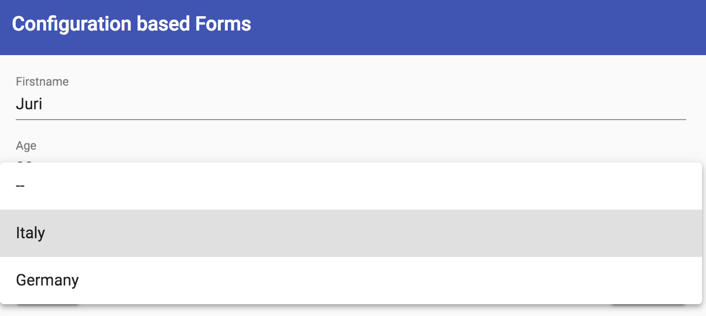
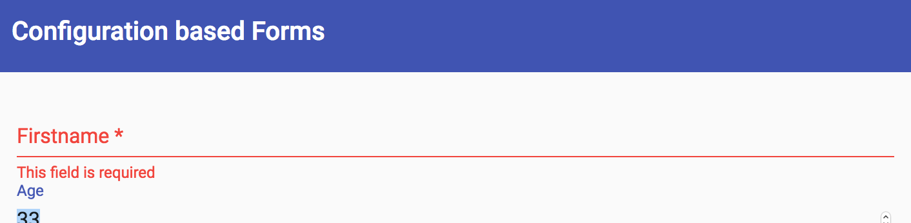

In Angular we have two main methods for creating forms: template driven and model driven (better known as reactive) forms. Both have advantages and disadvantages. Template driven forms tend to be simpler to learn initially, are more template heavy, but not as powerful for more complex scenarios than reactive forms.
This codelab dives into an alternative way of creating forms, namely by using a fully configuration based approach to developing reactive forms. For that purpose we're going to use ngx-formly.
What you'll learn
- Install ngx-formly into an existing Angular project components
- Create a simple Angular form with formly
- Define select controls with dynamic data
- Disabling controls based on others
- Hiding/showing controls based on others
What you'll need
- A browser, ideally Chrome
- Preferably a GitHub account for saving the work being done
The exercises will be done directly in Stackblitz, an online IDE. Make sure you have access to Stackblitz and - although not strictly required - login with your GitHub account. This allows you to fork the exercises and save your intermediate state.
Alternatively download the example and use your local setup:

The project is already setup with Formly and ready for you to get started. Inspect the current setup. Open the app.module.ts and note the registration of the FormlyModule as well as the FormlyMaterialModule. We need the latter because for this exercises app we're using Angular's Material Design library.
Go to the src/app/configuration-forms/formly-demo/formly-demo.component.html and note how the formly-form component is placed in the HTML, and the input properties it takes.
You should see the app being rendered properly in Stackblitz's preview window (if you're running the example locally, execute npm start from some shell).

The debug component is there to inspect the current state of the form as well as the model that is databound. This is useful during development to check everything is properly databound.
Open the formly-demo.component.ts. This is the place where we'll mainly operate in this exercise.
// src/app/configuration-forms/formly-demo/formly-demo.component.ts
@Component({...})
export class FormlyDemoComponent implements OnInit {
form = new FormGroup({});
model: any = {
id: 1223,
firstname: 'Juri',
age: 33,
nationId: 1,
cityId: 1,
zipCode: 39100,
phoneNumbers: [{ contactTypeId: 1, number: '' }]
};
fields: FormlyFieldConfig[] = [];
...
}The code excerpt shows the main properties we're interested:
form- is already instantiated. This is the Angular reactive Form object we need to hook on the controls. This will be done automatically by Formlymodel- is the data object we need to bind onto our form. In a real-world example this would be the data we retrieve from our backend API.fields- this is the place where we configure our form, using Formly's syntax.
Let's map the firstname and age property of our model object. Go to the fields property and add the following Formly configuration:
{
key: 'firstname',
type: 'input',
templateOptions: {
label: 'Firstname'
}
}You should see the according input field being rendered automatically as well as being databound to our model.

Similarly map the age field. Note, add another type: ‘number' to the templateOptions of that mapping. As a result you should get an input type="number" being rendered.
As a next step we want to map the nationId property. Obviously the end user won't enter the id directly, but rather choose it from a list of nations.
Hints:
- Use the formly type "select"
- The list of options can be set on the
templateOptions.optionsproperty of the corresponding formly config.
Use the following array as the data source
[
{
label: '--',
value: null
},
{
label: 'Italy',
value: 1
},
{
label: 'Germany',
value: 2
}
]
Of course won't have a static array in a real app. Rather we have an Observable that might be returned by Angular's HTTP service. There is already a city.service.ts configured that you can inject into the formly-demo.component.ts.
Bind the cityService.getNations() Observable to the select that binds the nationId.
Copy the configuration of the nationId and map it to the cityId. We now want to retrieve the city filtered by the chosen nationId. The cityService already exposes an according method called getCities(nationId) that takes an optional nationId as parameter.
In order to be able to listen to changes of another form field, we can use the native reactive Forms API:
field.form.get('nationId').valueChanges;This gives us an observable stream of values emitted by the nationId form control.
To get access to the form, we can add the onInit hook on the cityId definition.
{
key: 'cityId',
type: 'select',
templateOptions: {
label: 'City',
options: []
},
hooks: {
onInit: (field: FormlyFieldConfig) => {
const nationIdCtrl = field.form.get('nationId');
...
}
}
}Subscribe to the stream of nationId changes, invoke the cityService.getCities(...) passing the nationId and then set it to the formlyField config like this:
field.templateOptions.options = cities;Whenever the nation is not chosen, we want to hide the city select. We can use the Formly hideExpression to achieve that.
The hideExpression has a callback function that gives us the model and expects either true/false as a return value.
hideExpression: model => ...Thus we can directly check the nationId on our model object.
Add a required validation to our firstname property.
{
...
templateOptions: {
...
required: true
}
}To also add a proper validation message, open the app.module.ts and add it to the registration of our FormlyModule.forRoot(...).
FormlyModule.forRoot({
validationMessages: [
{ name: 'required', message: 'This field is required' }
],
})
Formly obviously also allows us to specify a custom validator. First, open the app.module.ts and create our validator logic.
A custom validator in Angular reactive forms is simply a function. Define a function that we can add to our nation select control which returns a validation error whenever the selected nation is different than Italy.
export function onlyItaliansValidator(control: FormControl): ValidationErrors {
/*
return { onlyItalians: true } whenever the validation fails
*/
}After implementing the validation logic, we need to register it on the FormlyModule. Moreover we also need to define an according validation message:
FormlyModule.forRoot({
validationMessages: [
{ name: 'required', message: 'This field is required' },
{ name: 'onlyItalians', message: 'Sorry, solo italiani!' }
],
validators: [{ name: 'onlyItalians', validation: onlyItaliansValidator }]
}),Add the validator to our nationId field configuration.
Add the validator to the nationId field configuration as follows:
{
key: 'nationId',
...
validators: {
validation: ['onlyItalians']
}
},